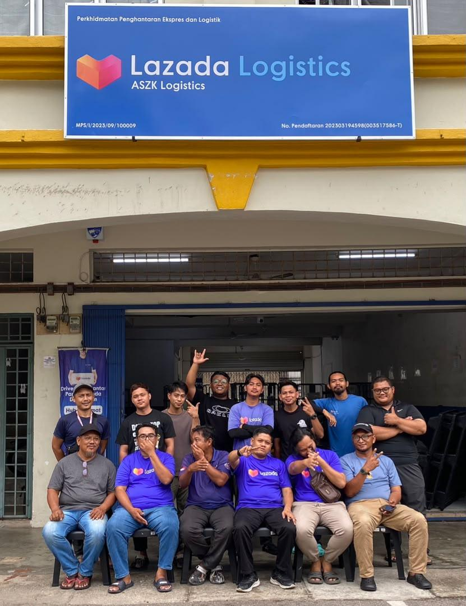
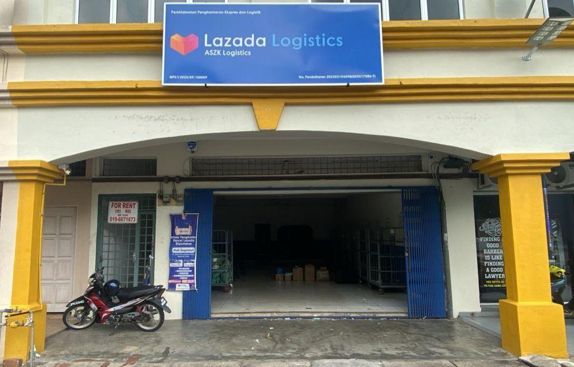
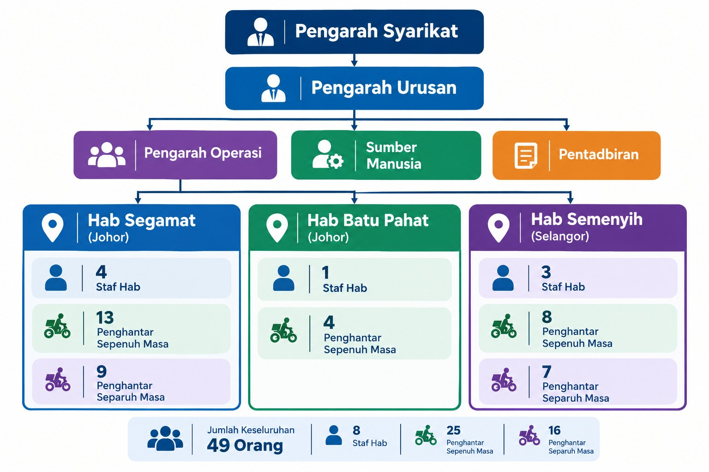

Logistik & Penghantaran Bungkusan yang Cekap dan Boleh Dipercayai
ASZK Logistics ialah perniagaan logistik dan pengedaran bungkusan yang memenuhi keperluan penghantaran barangan, khususnya dalam industri e-dagang yang semakin berkembang di Malaysia.
No. Pendaftaran SSM: 202303194598 (003517586-T)

Tentang ASZK Logistics
ASZK Logistics merupakan sebuah perniagaan dalam sektor logistik dan pengedaran bungkusan yang ditubuhkan bagi memenuhi keperluan perkhidmatan penghantaran barangan, khususnya dalam industri e-dagang yang semakin berkembang di Malaysia.
Perniagaan ini memberi tumpuan kepada pengurusan operasi penghantaran bungkusan, penyelarasan tenaga kerja, pengendalian bungkusan di hab serta pelaksanaan penghantaran kepada pelanggan akhir. Operasi yang sistematik dan tersusun menjadi asas penting bagi memastikan setiap bungkusan dikendalikan dengan baik serta dihantar mengikut kawasan dan prosedur yang ditetapkan.
Seiring dengan perkembangan industri logistik, ASZK Logistics berusaha memperkukuh keupayaan operasinya melalui pengurusan hab yang cekap, penyelarasan penghantar, pemantauan prestasi penghantaran dan penambahbaikan proses kerja secara berterusan.
ASZK Logistics juga memberi penekanan terhadap aspek ketepatan penghantaran, pengurusan bungkusan yang bertanggungjawab dan kualiti perkhidmatan bagi menyokong kelancaran rantaian pengedaran serta memenuhi keperluan pelanggan.
ASZK Logistics mengendalikan operasi logistik di beberapa kawasan, termasuk Segamat, Batu Pahat, dan Semenyih.

Apa yang Kami Lakukan
ASZK Logistics menjalankan aktiviti perniagaan dalam bidang logistik, pengendalian bungkusan dan perkhidmatan penghantaran jarak akhir (last-mile delivery). Syarikat ini terlibat dalam pengurusan dan penghantaran bungkusan bagi platform e-dagang seperti Lazada Express dan Shopee Express, merangkumi proses pengendalian bungkusan di hab sehingga penghantaran kepada pelanggan akhir.
Antara aktiviti utama perniagaan ialah:
Perkhidmatan Penghantaran Bungkusan
Mengurus dan melaksanakan penghantaran bungkusan bagi Lazada dan Shopee ke alamat kediaman, premis perniagaan serta lokasi pelanggan yang ditetapkan.
Pengurusan Hab Logistik
Mengendalikan penerimaan, penyusunan, pengasingan dan persediaan bungkusan sebelum proses penghantaran kepada pelanggan.
Pengurusan Penghantaran dan Pemulangan
Menyelaras proses penghantaran, kutipan dan pemulangan bungkusan mengikut prosedur operasi yang ditetapkan.
Pengurusan dan Penyelarasan Tenaga Kerja
Mengurus pembahagian tugasan penghantar berdasarkan kawasan liputan, jumlah bungkusan dan keperluan operasi harian.
Pemantauan Status Penghantaran
Memantau kemajuan penghantaran, merekod status penghantaran serta mengurus kes penghantaran yang tidak berjaya mengikut prosedur yang ditetapkan.
Penyelarasan Operasi Logistik
Memastikan pergerakan bungkusan, pengurusan tenaga kerja dan komunikasi dengan pihak berkaitan berjalan dengan cekap dan teratur bagi menyokong kelancaran operasi penghantaran Lazada dan Shopee.
Operasi Perniagaan
Operasi ASZK Logistics berasaskan sistem pengurusan hab yang berfungsi sebagai pusat penyelarasan bagi penerimaan, pengendalian dan pengedaran bungkusan. Proses operasi dilaksanakan melalui beberapa peringkat utama:
Peringkat 1: Penerimaan Bungkusan
Bungkusan diterima di hab dan disemak berdasarkan rekod serta maklumat penghantaran yang berkaitan.
Peringkat 2: Pengasingan dan Penyusunan
Bungkusan diasingkan mengikut kawasan penghantaran bagi memudahkan pengagihan tugasan kepada penghantar.
Peringkat 3: Pengagihan kepada Penghantar
Bungkusan diagihkan kepada penghantar berdasarkan kawasan, laluan dan jumlah tugasan harian.
Peringkat 4: Penghantaran kepada Pelanggan
Penghantar melaksanakan penghantaran ke destinasi yang ditetapkan dan mengemas kini status melalui sistem berkaitan.
Peringkat 5: Pemantauan dan Tindakan Susulan
Status penghantaran dipantau bagi mengenal pasti bungkusan tertangguh, penghantaran gagal dan isu operasi yang memerlukan tindakan susulan.
1. Kawasan Liputan Operasi (Coverage Area)
A. Hab Segamat, Johor
Hab Segamat mempunyai kawasan liputan yang merangkumi keseluruhan kawasan operasi Segamat, Johor, melibatkan enam kawasan poskod utama:
| 85000 | Bandar Segamat – meliputi kawasan bandar Segamat serta kawasan sekitarnya yang berada dalam zon penghantaran hab. |
|---|---|
| 85100 | Batu Anam – merangkumi kawasan Batu Anam dan kawasan perkhidmatan berhampiran yang ditetapkan. |
| 85200 | Jementah – meliputi kawasan Jementah dan kawasan sekitarnya bagi memenuhi keperluan penghantaran bungkusan kepada pelanggan. |
| 85300 | Labis – merangkumi kawasan Labis dan kawasan liputan berkaitan di bawah pengurusan hab Segamat. |
| 85400 | Chaah – meliputi kawasan Chaah dan kawasan sekitarnya yang termasuk dalam rangkaian penghantaran. |
| 85500 | Bekok – merangkumi kawasan Bekok bagi memastikan perkhidmatan penghantaran turut meliputi kawasan berkenaan. |
Dengan liputan enam kawasan poskod ini, Hab Segamat memainkan peranan penting dalam pengurusan pengedaran bungkusan di sekitar daerah Segamat. Operasi hab ini memerlukan penyelarasan penghantar, perancangan laluan dan pengurusan jumlah bungkusan yang sistematik bagi memastikan penghantaran dapat dilaksanakan mengikut keperluan setiap kawasan.
B. Hab Batu Pahat, Johor
Hab Batu Pahat memberi tumpuan kepada operasi penghantaran bungkusan di tiga kawasan utama, iaitu:
Kawasan liputan ini membolehkan ASZK Logistics menyediakan perkhidmatan pengedaran bungkusan kepada pelanggan di kawasan yang ditetapkan melalui pengurusan penghantaran yang disesuaikan dengan keadaan geografi dan keperluan operasi setempat.
Pengurusan hab ini merangkumi penerimaan dan penyusunan bungkusan, pengagihan tugasan kepada penghantar serta penyelarasan laluan penghantaran. Pendekatan ini bertujuan memastikan setiap kawasan dapat diliputi secara teratur, di samping mengoptimumkan penggunaan tenaga kerja dan sumber operasi yang tersedia.
C. Hab Semenyih, Selangor
Hab Semenyih meliputi keseluruhan kawasan penghantaran di bawah poskod 43500, Semenyih, Selangor.
Hab ini berperanan sebagai pusat pengendalian dan pengedaran bungkusan bagi kawasan liputannya, dengan operasi yang melibatkan penerimaan bungkusan, penyusunan mengikut destinasi, pengagihan kepada penghantar dan pelaksanaan penghantaran kepada semua pelanggan.
Dengan tumpuan kepada keseluruhan zon poskod 43500, pengurusan operasi Hab Semenyih memberi penekanan kepada penyelarasan tenaga kerja dan perancangan laluan bagi memastikan kapasiti penghantaran dapat digunakan secara optimum serta menyokong peningkatan jumlah bungkusan pada masa hadapan.
2. Kapasiti Pengendalian Bungkusan (Parcel Handling Capacity)
ASZK Logistics mempunyai kapasiti pengendalian bungkusan yang berbeza bagi setiap hab berdasarkan skala operasi dan keperluan kawasan liputan masing-masing. Kapasiti ini menggambarkan keupayaan operasi harian setiap hab serta potensi peningkatan pengendalian bungkusan selaras dengan perkembangan perniagaan.
A. Hab Segamat
Hab Segamat mempunyai kapasiti pengendalian sebanyak 2,000 bungkusan sehari, dengan operasi yang dirancang untuk berjalan selama 30 hari sebulan. Berdasarkan kapasiti tersebut, hab ini berupaya mengendalikan lebih daripada 60,000 bungkusan sebulan, sekiranya kapasiti harian dikekalkan sepanjang tempoh operasi tersebut.
Dengan liputan enam kawasan poskod, pengurusan Hab Segamat memerlukan perancangan operasi yang menyeluruh bagi memastikan pengagihan bungkusan kepada penghantar dapat dilakukan dengan cekap. Pengurusan jumlah bungkusan yang tinggi turut memerlukan penyelarasan tenaga kerja, penyusunan bungkusan mengikut destinasi dan pemantauan penghantaran secara berterusan.
Bagi menyokong pertumbuhan operasi dan peningkatan permintaan perkhidmatan, Hab Segamat menyasarkan peningkatan kapasiti pengendalian sehingga 4,000 bungkusan sehari. Jika sasaran ini dapat dicapai dan dikekalkan selama 30 hari operasi, kapasiti pengendalian berpotensi mencecah 120,000 bungkusan sebulan.
Peningkatan ini akan memperkukuh peranan Hab Segamat sebagai hab utama dalam rangkaian operasi ASZK Logistics, di samping meningkatkan keupayaan perniagaan untuk mengendalikan jumlah bungkusan yang lebih besar secara sistematik.
B. Hab Batu Pahat
Hab Batu Pahat mempunyai kapasiti pengendalian sebanyak 500 bungkusan sehari, dengan anggaran pengendalian bulanan sekitar 13,000 bungkusan.
Operasi hab ini memberi tumpuan kepada penghantaran di kawasan Rengit, Benut dan Ayer Baloi. Pengurusan penghantaran dilaksanakan dengan mengambil kira taburan destinasi, jarak perjalanan serta keperluan penyelarasan penghantar bagi memastikan bungkusan dapat diedarkan dengan teratur.
Kapasiti operasi ini membolehkan Hab Batu Pahat menyokong keperluan penghantaran di kawasan liputannya melalui pengurusan bungkusan yang tersusun dan penggunaan tenaga kerja yang bersesuaian.
C. Hab Semenyih
Hab Semenyih mempunyai kapasiti pengendalian sebanyak 1,500 bungkusan sehari yang diterima untuk diproses dan diedarkan melalui hab tersebut.
Sebagai hab yang meliputi kawasan poskod 43500, Semenyih, operasi ini memerlukan penyelarasan yang cekap antara penerimaan bungkusan, pengasingan mengikut destinasi dan pengagihan kepada penghantar. Pengurusan operasi yang sistematik penting bagi memastikan jumlah bungkusan yang diterima dapat dikendalikan mengikut keupayaan tenaga kerja dan keperluan penghantaran harian.
Bagi meningkatkan keupayaan perniagaan dan menyokong pertumbuhan jumlah bungkusan, Hab Semenyih menyasarkan peningkatan kapasiti sehingga 3,000 bungkusan sehari. Sasaran ini mencerminkan potensi pengembangan operasi melalui penambahbaikan pengurusan hab, pengoptimuman tenaga kerja dan peningkatan kecekapan proses pengedaran.
Peningkatan kapasiti tersebut dijangka dapat memperkukuh keupayaan Hab Semenyih dalam mengendalikan jumlah bungkusan yang lebih besar serta menyokong perkembangan operasi ASZK Logistics di Selangor.
Pasukan yang Teratur & Bertanggungjawab
ASZK Logistics menitikberatkan pengurusan tenaga kerja yang sistematik bagi memastikan kelancaran operasi harian dan pencapaian sasaran perkhidmatan.
Pengurusan operasi merangkumi penyelarasan tugasan kakitangan hab, pengagihan bungkusan kepada penghantar, pemantauan prestasi penghantaran serta penyelesaian isu yang timbul semasa operasi.
Antara aspek pengurusan yang diberi perhatian ialah:
- Penyusunan jadual dan tugasan harian.
- Pengagihan kawasan penghantaran kepada penghantar.
- Pemantauan produktiviti dan prestasi penghantaran.
- Pengurusan bungkusan tertangguh dan kes penghantaran gagal.
- Penyelarasan komunikasi antara kakitangan hab dan penghantar.
- Pengambilan serta pengekalan tenaga kerja yang sesuai dengan keperluan operasi.
Melalui pengurusan yang teratur, ASZK Logistics berusaha membentuk pasukan kerja yang produktif, bertanggungjawab dan mampu memenuhi keperluan perkhidmatan secara konsisten.
Carta Organisasi

Hab Segamat (Johor)
Hab Batu Pahat (Johor)
Hab Semenyih (Selangor)
Jumlah Keseluruhan: 49 Orang
8 Staf Hab · 25 Penghantar Sepenuh Masa · 16 Penghantar Separuh Masa
Mengapa ASZK Logistics
ASZK Logistics memberi penekanan terhadap beberapa aspek utama yang menyokong pelaksanaan operasi logistik.
Kecekapan operasi
Pengurusan bungkusan dan penyelarasan penghantar dilaksanakan melalui aliran kerja yang tersusun bagi mengurangkan kelewatan dan meningkatkan produktiviti.
Pengurusan berasaskan hab
Penggunaan hab sebagai pusat penyelarasan memudahkan pengendalian bungkusan, pembahagian tugasan dan pemantauan operasi harian.
Fleksibiliti operasi
Penyusunan tenaga kerja dan laluan penghantaran boleh disesuaikan berdasarkan jumlah bungkusan, kawasan liputan dan keperluan operasi.
Pemantauan prestasi
Pemantauan status penghantaran membantu mengenal pasti isu operasi dan memastikan tindakan susulan dapat dilaksanakan dengan sewajarnya.
Komitmen terhadap pelanggan
Pengendalian bungkusan yang bertanggungjawab serta komunikasi yang jelas menjadi antara keutamaan dalam pelaksanaan perkhidmatan.
Penambahbaikan berterusan
Perniagaan berusaha memperkemas proses kerja, mengoptimumkan penggunaan sumber dan meningkatkan kecekapan perkhidmatan dari semasa ke semasa.
Visi dan Misi ASZK Logistics
VISI
Menjadi sebuah syarikat logistik dan pengedaran bungkusan yang dipercayai, berdaya saing dan berdaya maju di Malaysia melalui kecemerlangan operasi, penggunaan teknologi, pembangunan tenaga kerja serta peluasan rangkaian perkhidmatan secara mampan.
ASZK Logistics beraspirasi untuk membangunkan sebuah organisasi logistik yang mempunyai keupayaan operasi yang kukuh, sistem pengurusan yang cekap dan tenaga kerja yang profesional. Melalui perancangan perniagaan yang strategik serta penambahbaikan berterusan, syarikat berhasrat untuk memperluas kawasan liputan, meningkatkan kapasiti pengendalian bungkusan dan memperkukuh kedudukan dalam industri logistik dan pengedaran.
Dalam jangka panjang, ASZK Logistics menyasarkan pembangunan rangkaian operasi yang lebih luas dan tersusun, disokong oleh kemudahan yang bersesuaian, pengurusan sumber yang optimum serta penggunaan teknologi bagi meningkatkan produktiviti dan kualiti perkhidmatan. Pertumbuhan ini akan dilaksanakan dengan mengambil kira kecekapan kos, keperluan pelanggan dan kelestarian perniagaan bagi memastikan syarikat terus berkembang serta mampu menghadapi perubahan industri.
MISI
Menyediakan Perkhidmatan Penghantaran yang Cekap dan Boleh Dipercayai
Memberikan perkhidmatan penghantaran bungkusan yang mengutamakan ketepatan, keselamatan dan kecekapan. ASZK Logistics komited untuk memperkemas setiap peringkat proses penghantaran, bermula daripada penerimaan bungkusan di hab sehingga penghantaran kepada pelanggan akhir, bagi memastikan perkhidmatan dilaksanakan mengikut prosedur dan standard yang ditetapkan.
Memperkukuh Kecekapan Operasi dan Pengurusan Hab
Membangunkan sistem pengurusan hab yang lebih sistematik melalui penyusunan aliran kerja, pengoptimuman laluan penghantaran dan pengagihan tugasan yang seimbang. Usaha ini bertujuan meningkatkan kapasiti pengendalian bungkusan, mengurangkan kelewatan operasi serta memastikan penggunaan tenaga kerja, kemudahan dan sumber syarikat dilaksanakan secara optimum.
Membangunkan Tenaga Kerja yang Profesional dan Produktif
Melahirkan pasukan kerja yang berkemahiran, berdisiplin dan bertanggungjawab melalui latihan, bimbingan serta pemantauan prestasi secara berterusan. ASZK Logistics turut memberi penekanan kepada pembangunan kepimpinan, peningkatan kemahiran pengurusan dan pengekalan tenaga kerja bagi membina organisasi yang stabil serta mampu menyokong pertumbuhan perniagaan dalam jangka panjang.
Memanfaatkan Teknologi dan Pendigitalan Operasi
Menggalakkan penggunaan teknologi dan sistem digital dalam pengurusan bungkusan, pemantauan prestasi, penyelarasan penghantar serta pengurusan maklumat operasi. Pendekatan ini bertujuan meningkatkan ketepatan data, mempercepat proses kerja, memudahkan pemantauan dan menyokong pembuatan keputusan perniagaan berdasarkan maklumat yang lebih teratur.
Memperluas Rangkaian Operasi dan Kawasan Liputan
Memperkukuh operasi sedia ada di Segamat, Batu Pahat dan Semenyih sebelum meneroka peluang pengembangan ke kawasan baharu berdasarkan permintaan pasaran dan kemampuan operasi. Peluasan ini akan dilaksanakan secara terancang dengan mengambil kira keperluan tenaga kerja, kemudahan hab, keupayaan pengangkutan dan potensi pertumbuhan setiap kawasan bagi membentuk rangkaian pengedaran yang lebih luas dan berkesan.
Meningkatkan Kepuasan dan Kepercayaan Pelanggan
Membina hubungan perniagaan yang kukuh melalui perkhidmatan yang konsisten, komunikasi yang profesional dan pengendalian isu penghantaran secara bertanggungjawab. ASZK Logistics berusaha meningkatkan tahap kepercayaan pelanggan dan rakan perniagaan dengan memastikan setiap urusan dilaksanakan secara telus serta memberi perhatian kepada maklum balas dan keperluan perkhidmatan.
Memperkukuh Daya Saing dan Kemampanan Perniagaan
Mengurus pertumbuhan perniagaan secara strategik melalui kawalan kos, penggunaan sumber yang cekap, pemantauan prestasi kewangan dan penilaian peluang pasaran. ASZK Logistics berhasrat membina asas perniagaan yang kukuh supaya syarikat mampu meningkatkan produktiviti, mengekalkan kualiti perkhidmatan dan menghadapi cabaran industri dengan lebih berkesan.
Mendorong Penambahbaikan dan Pertumbuhan Berterusan
Mewujudkan budaya kerja yang mengutamakan inovasi, penilaian prestasi dan penambahbaikan proses secara berterusan. Setiap peluang untuk meningkatkan kecekapan, mengurangkan pembaziran dan memperkemas pengurusan akan dinilai bagi memastikan ASZK Logistics terus berkembang, meningkatkan keupayaan operasi dan mencapai matlamat.
Komitmen Terhadap Masa Hadapan
ASZK Logistics komited untuk membina sebuah perniagaan logistik yang mempunyai asas operasi yang kukuh, pengurusan yang profesional dan keupayaan untuk berkembang secara mampan. Melalui pembangunan tenaga kerja, pemerkasaan teknologi, peningkatan kapasiti pengendalian dan peluasan rangkaian perkhidmatan, syarikat berhasrat untuk meningkatkan daya saing serta mewujudkan peluang pertumbuhan yang berterusan.
Setiap usaha pembangunan akan berpandukan prinsip kecekapan, integriti, tanggungjawab dan kecemerlangan perkhidmatan bagi memastikan ASZK Logistics mampu memenuhi keperluan industri yang sentiasa berubah serta membina kedudukan perniagaan yang lebih kukuh pada masa hadapan.
Hala Tuju Perniagaan
ASZK Logistics berhasrat untuk terus memperkukuh asas perniagaan dan meningkatkan keupayaan dalam sektor logistik serta pengedaran bungkusan.
Antara fokus pembangunan perniagaan adalah untuk meningkatkan kecekapan pengurusan hab, memperkukuh tenaga kerja, memperkemas perancangan laluan penghantaran dan menambah baik pemantauan prestasi operasi.
Perniagaan juga berhasrat untuk mengoptimumkan penggunaan kemudahan, peralatan dan sistem operasi bagi menyokong pengurusan bungkusan yang lebih sistematik.
Dalam jangka panjang, ASZK Logistics menyasarkan pembentukan struktur operasi yang lebih kukuh, cekap dan mampu berkembang seiring dengan keperluan industri. Usaha ini bertujuan memastikan pertumbuhan perniagaan dapat disokong oleh pengurusan yang baik, produktiviti yang konsisten dan kualiti perkhidmatan yang terpelihara.
Galeri
Klik gambar untuk memperbesarkan.


Hubungi Kami
Maklumat Perhubungan – ASZK LOGISTICS
- No. Pendaftaran SSM:
202303194598 (003517586-T) - Alamat:
27, Jalan Putra, Bandar Putra Segamat, 85000 Segamat, Johor. - Telefon:
+60 10-907 9821 - Email:
aszk.logistics@gmail.com
Maklumat Perniagaan – Alamat Hab
| 1. Hab Segamat | No. 30 & 31 (Tingkat Bawah), Jalan Nagasari 1, 85000 Segamat, Johor |
|---|---|
| 2. Hab Batu Pahat | No. 1, Jalan Budi Sembilan, Taman Wawasan Perindustrian, 83200 Senggarang, Johor |
| 3. Hab Semenyih | No. 22A-G (Tingkat Bawah), Jalan TPS 2/2A, Taman Pelangi, 43500 Semenyih, Selangor |